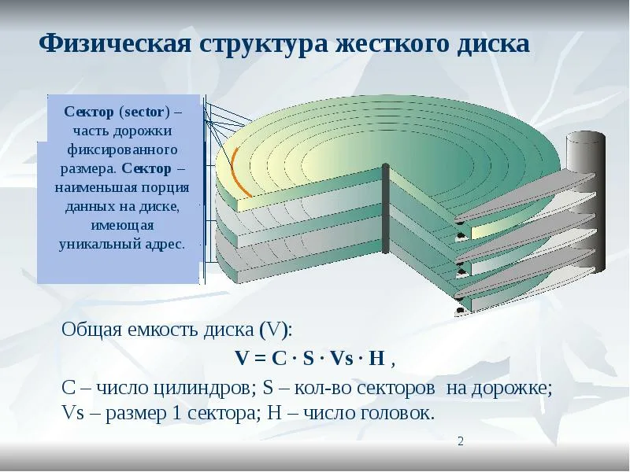

Все современные ОС обеспечивают создание файловой системы, которая предназначена для хранения данных на дисках и обеспечения доступа к ним.
Основные функции файловой системы можно разделить на две группы:
1. Функции для работы с файлами (создание, удаление, переименование файлов и т.д.).
2. Функции для работы с данными, которые хранятся в файлах (запись, чтение, поиск данных и т.д.).
Известно, что файлы используются для организации и хранения данных на машинных носителях. Файл – это последовательность произвольного числа байтов, обладающая уникальным собственным именем или поименованная область на машинных носителях.
Организация файлов в виде древовидной структуры называется файловой системой.

Кластер – это минимально адресуемая единица дисковой памяти, выделяемая для файла. Файл или каталог занимает целое число кластеров .
Существуют три файловые системы FAT: FAT12 (для гибких дисков FDD), FAT16, FAT32. Они различаются количестом бит (12, 16, 32) для указания номера кластера в системе управления файлами. Картой области данных является, по сути, Таблица размещения файлов (File Allocation Table - FAT) Каждый элемент таблицы FAT (12, 16 или 32 бит) соответствует одному кластеру диска и характеризует его состояние: свободен, занят или является сбойным кластером (bad clаster). Разбиение области данных на кластеры вместо использования секторов позволяет: уменьшить размер таблицы FAT, уменьшить фрагментацию файлов, сокращается длина цепочек файла, ускоряется доступ к файлу. Основной недостаток FAT - медленная работа с файлами. При создании файла работает правило - выделяется первый свободный кластер. Это ведет к фрагментации диска и сложным цепочкам файлов. Отсюда следует замедление работы с файлами.
В принципе, файловая система FAT - это то, что нужно сегодня избегать.
Раздел NTFS, теоретически, может быть почти какого угодно размера. Максимальный размер раздела NTFS в данный момент ограничен лишь размерами жестких дисков.
Основные особенности NTFS:
• Работа на дисках большого объема происходит эффективно (намного эффективнее, чем в FAT);
• Имеются средства для ограничения доступа к файлам и каталогам;
• Разделы NTFS обеспечивают локальную безопасность как файлов, так и каталогов;
• Введен механизм транзакций, при котором осуществляется журналирование файловых операций;
• Существенное увеличение надежности;
• Сняты многие ограничения на максимальное количество дисковых секторов и/или кластеров;
• Система NTFS также обладает встроенными средствами сжатия, которые можно применять к отдельным файлам, целым каталогам и даже томам (и впоследствии отменять или назначать их по своему усмотрению).
Основной недостаток файловой системы NTFS - служебные данные занимают много места (например, каждый элемент каталога занимает 2 Кбайт) - для малых разделов служебные данные могут занимать до 25% объема носителя.